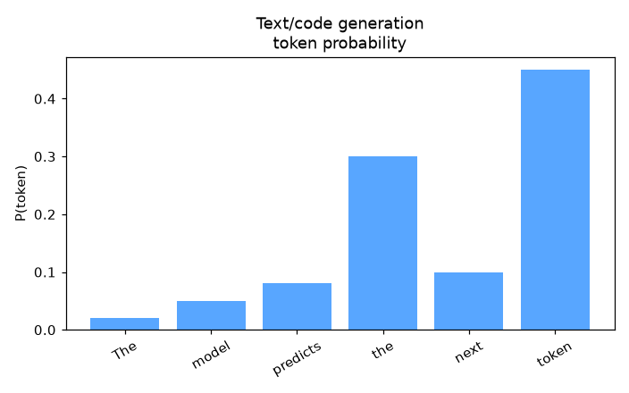

Prompt Engineering — AI engineering example · part of the MLOps monorepo
This example is grounded in Prompt Engineering. The equations below drive every forward and backward pass in the implementation.
Prompt engineering reformulates downstream tasks as language modeling. Given a prompt $p$, the model generates output $y$ autoregressively. Prompt tuning optimizes $p$ to maximize task-specific likelihood. Soft prompts are continuous embeddings optimized via gradient descent.
Concrete forward-pass / update evaluation using the algorithm's own equations:

Interactive prompt comparison table; generation diversity vs prompt length; token probability explorer.
The example follows a consistent data → train → evaluate → serve pipeline. Inputs are loaded and validated, transformed by the core algorithm, scored against held-out data, and exposed through a REST API.
| Class | Public methods | Responsibility |
|---|---|---|
GenerateRequest | — | |
GenerateResponse | — | |
EvaluateRequest | — | |
EvaluateResponse | — | |
OptimizeRequest | — | |
OptimizeResponse | — | |
StatsResponse | — | |
PromptTemplate | render, get_placeholder_names | |
PromptTechnique | apply, get_technique_params | |
PromptExample | — | |
PromptEvaluator | evaluate, get_average_scores, reset_scores | |
PromptOptimizer | optimize, _suggest_improvement, get_optimization_history, get_best_prompt, get_best_score | |
PromptEngineeringModel | _init, _register_default_techniques, register_template, set_technique, generate_prompt, evaluate_prompt, optimize_prompt, get_history, get_current_prompt, get_available_techniques, save, load, to_dict |
data.py reads the source dataset and splits train/test.model.py applies the mathematics from Section 1.api.py exposes prediction endpoints with drift detection.Key design choices in this module: a pure-NumPy implementation (no PyTorch/TensorFlow), schema validation via ai_core.validation, structured JSON logging through ai_core.logging, Prometheus metrics from ai_core.metrics, and MLflow/model-registry persistence via ai_core.model_registry. The FastAPI service wraps the trained model with observability middleware from ai_core.fastapi_middleware.
The most important behaviour is summarised below; full source for each module is collapsible so the page stays readable while remaining self-contained.
No docstring-annotated key methods.
"""Prompt Engineering implementation.
Architecture:
1. PromptTemplate: Reusable prompt templates with placeholders
2. PromptTechnique: Various prompting techniques (zero-shot, few-shot, CoT, etc.)
3. PromptOptimizer: Optimizes prompts based on feedback and evaluation
4. PromptEvaluator: Evaluates prompt quality and performance
Core concepts:
- Zero-shot prompting: Minimal instructions, no examples
- Few-shot prompting: Provide examples in the prompt
- Chain-of-Thought (CoT): Show reasoning steps
- Self-Ask: Model asks itself clarifying questions
- Meta-Prompting: Single prompt for diverse tasks
- Least to Most: Start general, then add specifics
- Context Amplification: Add supplementary context
- Iterative Prompting: Break complex tasks into steps
Args:
template_name: name of the prompt template
technique: prompting technique to use
max_tokens: maximum tokens in generated response
temperature: sampling temperature for generation
random_seed: random seed for reproducibility
"""
from dataclasses import dataclass, field
from typing import Any
import numpy as np
@dataclass
class PromptTemplate:
template_id: str
template_text: str
placeholders: list[str]
technique: str = "zero-shot"
metadata: dict[str, Any] = field(default_factory=dict)
_cache: dict = field(default_factory=dict, repr=False)
def render(self, **kwargs) -> str:
prompt = self.template_text
for key, value in kwargs.items():
placeholder = "{" + key + "}"
prompt = prompt.replace(placeholder, str(value))
self._cache = {"rendered_prompt": prompt, "kwargs": kwargs}
return prompt
def get_placeholder_names(self) -> list[str]:
return self.placeholders
@dataclass
class PromptTechnique:
technique_name: str
description: str
examples: list[dict[str, str]] = field(default_factory=list)
parameters: dict[str, Any] = field(default_factory=dict)
_cache: dict = field(default_factory=dict, repr=False)
def apply(self, base_prompt: str, context: str | None = None, examples: list[dict[str, str]] | None = None) -> str:
if self.technique_name == "zero-shot":
return base_prompt
elif self.technique_name == "few-shot":
if examples:
example_text = "\n".join([f"Input: {ex['input']}\nOutput: {ex['output']}" for ex in examples])
return f"{example_text}\n\nInput: {base_prompt}\nOutput:"
return base_prompt
elif self.technique_name == "chain-of-thought":
return f"{base_prompt}\n\nLet's think step by step:"
elif self.technique_name == "self-ask":
return f"{base_prompt}\n\nWhat questions do I need to ask to answer this?"
elif self.technique_name == "least-to-most":
return f"First, let's understand the basics: {base_prompt}\n\nNow let's build up to the full solution."
elif self.technique_name == "meta-prompting":
return f"General instruction: {base_prompt}\n\nApply this to: {context if context else 'any relevant task'}"
elif self.technique_name == "context-amplification":
return f"Context: {context if context else 'N/A'}\n\nTask: {base_prompt}"
elif self.technique_name == "iterative":
return f"Step 1: {base_prompt}\n\nContinue step by step."
else:
return base_prompt
def get_technique_params(self) -> dict[str, Any]:
return self.parameters
@dataclass
class PromptExample:
example_id: str
input_text: str
expected_output: str
context: str | None = None
technique: str = "zero-shot"
metadata: dict[str, Any] = field(default_factory=dict)
@dataclass
class PromptEvaluator:
evaluation_metrics: list[str] = field(default_factory=lambda: ["accuracy", "relevance", "clarity", "completeness"])
_scores: dict[str, list[float]] = field(default_factory=dict, repr=False)
def evaluate(self, prompt: str, response: str, expected: str | None = None) -> dict[str, float]:
scores = {}
words_prompt = set(prompt.lower().split())
words_response = set(response.lower().split())
words_expected = set(expected.lower().split()) if expected else set()
scores["relevance"] = len(words_prompt.intersection(words_response)) / max(len(words_prompt.union(words_response)), 1)
scores["clarity"] = min(1.0, len(response.split()) / 50.0)
scores["completeness"] = len(words_response.intersection(words_expected)) / max(len(words_expected), 1) if expected else 0.5
scores["accuracy"] = scores["completeness"]
for metric, score in scores.items():
if metric not in self._scores:
self._scores[metric] = []
self._scores[metric].append(score)
return scores
def get_average_scores(self) -> dict[str, float]:
return {metric: np.mean(scores) if scores else 0.0 for metric, scores in self._scores.items()}
def reset_scores(self) -> None:
self._scores = {}
@dataclass
class PromptOptimizer:
learning_rate: float = 0.01
optimization_iterations: int = 10
_best_prompt: str | None = None
_best_score: float = 0.0
_history: list[dict[str, Any]] = field(default_factory=list, repr=False)
def optimize(self, base_prompt: str, evaluator: PromptEvaluator, responses: list[tuple[str, str | None]], technique: PromptTechnique | None = None) -> str:
current_prompt = base_prompt
for iteration in range(self.optimization_iterations):
total_score = 0.0
for response, expected in responses:
scores = evaluator.evaluate(current_prompt, response, expected)
total_score += np.mean(list(scores.values()))
avg_score = total_score / max(len(responses), 1)
self._history.append({"iteration": iteration, "prompt": current_prompt, "score": avg_score})
if avg_score > self._best_score:
self._best_score = avg_score
self._best_prompt = current_prompt
current_prompt = self._suggest_improvement(current_prompt, avg_score)
return self._best_prompt or base_prompt
def _suggest_improvement(self, prompt: str, score: float) -> str:
words = prompt.split()
if score < 0.5:
if len(words) < 10:
return prompt + " Please provide a detailed and specific response."
else:
return " ".join(words[:len(words)//2]) + " Be concise and accurate."
return prompt
def get_optimization_history(self) -> list[dict[str, Any]]:
return self._history
def get_best_prompt(self) -> str | None:
return self._best_prompt
def get_best_score(self) -> float:
return self._best_score
@dataclass
class PromptEngineeringModel:
model_id: str
base_model_name: str = "default"
templates: dict[str, PromptTemplate] = field(default_factory=dict)
techniques: dict[str, PromptTechnique] = field(default_factory=dict)
evaluator: PromptEvaluator | None = None
optimizer: PromptOptimizer | None = None
_current_prompt: str | None = None
_current_technique: str = "zero-shot"
_history: list[dict[str, Any]] = field(default_factory=list, repr=False)
def _init(self) -> None:
self.evaluator = PromptEvaluator()
self.optimizer = PromptOptimizer()
self._register_default_techniques()
def _register_default_techniques(self) -> None:
default_techniques = [
PromptTechnique("zero-shot", "Direct prompt without examples"),
PromptTechnique("few-shot", "Prompt with examples", parameters={"n_examples": 3}),
PromptTechnique("chain-of-thought", "Step-by-step reasoning"),
PromptTechnique("self-ask", "Self-asking clarifying questions"),
PromptTechnique("least-to-most", "Start general, then add specifics"),
PromptTechnique("meta-prompting", "Single prompt for diverse tasks"),
PromptTechnique("context-amplification", "Add supplementary context"),
PromptTechnique("iterative", "Break complex tasks into steps"),
]
for technique in default_techniques:
self.techniques[technique.technique_name] = technique
def register_template(self, template: PromptTemplate) -> None:
self.templates[template.template_id] = template
def set_technique(self, technique_name: str) -> None:
if technique_name not in self.techniques:
raise ValueError(f"Unknown technique: {technique_name}")
self._current_technique = technique_name
def generate_prompt(self, template_id: str, technique: str | None = None, **kwargs) -> str:
if not self.templates:
self._init()
if template_id not in self.templates:
raise ValueError(f"Unknown template: {template_id}")
technique_name = technique or self._current_technique
template = self.templates[template_id]
base_prompt = template.render(**kwargs)
if technique_name in self.techniques:
technique_obj = self.techniques[technique_name]
final_prompt = technique_obj.apply(base_prompt, kwargs.get("context"), kwargs.get("examples"))
else:
final_prompt = base_prompt
self._current_prompt = final_prompt
self._history.append({"template_id": template_id, "technique": technique_name, "prompt": final_prompt})
return final_prompt
def evaluate_prompt(self, prompt: str, response: str, expected: str | None = None) -> dict[str, float]:
if self.evaluator is None:
self._init()
return self.evaluator.evaluate(prompt, response, expected)
def optimize_prompt(self, base_prompt: str, responses: list[tuple[str, str | None]]) -> str:
if self.optimizer is None:
self._init()
return self.optimizer.optimize(base_prompt, self.evaluator, responses)
def get_history(self) -> list[dict[str, Any]]:
return self._history
def get_current_prompt(self) -> str | None:
return self._current_prompt
def get_available_techniques(self) -> list[str]:
if not self.techniques:
self._init()
return list(self.techniques.keys())
def save(self, path: str) -> None:
import json
data = {
"model_id": self.model_id,
"base_model_name": self.base_model_name,
"current_technique": self._current_technique,
"templates": {tid: {"template_id": t.template_id, "template_text": t.template_text, "placeholders": t.placeholders, "technique": t.technique} for tid, t in self.templates.items()},
"techniques": {tname: {"technique_name": t.technique_name, "description": t.description, "parameters": t.parameters} for tname, t in self.techniques.items()},
"history": self._history,
}
with open(path, "w") as f:
json.dump(data, f, indent=2)
@classmethod
def load(cls, path: str) -> "PromptEngineeringModel":
import json
with open(path) as f:
data = json.load(f)
obj = cls(model_id=data["model_id"], base_model_name=data.get("base_model_name", "default"))
obj._current_technique = data.get("current_technique", "zero-shot")
obj._history = data.get("history", [])
for tid, tdata in data.get("templates", {}).items():
obj.templates[tid] = PromptTemplate(template_id=tdata["template_id"], template_text=tdata["template_text"], placeholders=tdata["placeholders"], technique=tdata.get("technique", "zero-shot"))
for tname, tdata in data.get("techniques", {}).items():
obj.techniques[tname] = PromptTechnique(technique_name=tdata["technique_name"], description=tdata["description"], parameters=tdata.get("parameters", {}))
return obj
def to_dict(self) -> dict[str, Any]:
return {
"model_id": self.model_id,
"base_model_name": self.base_model_name,
"n_templates": len(self.templates),
"n_techniques": len(self.techniques),
"current_technique": self._current_technique,
"n_history_entries": len(self._history),
}"""Training pipeline for Prompt Engineering."""
import argparse
import os
from pathlib import Path
from ai_core.logging import get_logger, setup_logging
from ai_core.model_registry import ModelRegistry
from prompt_engineering.data import load_prompt_dataset, save_dataset, train_test_split
from prompt_engineering.model import (
PromptEngineeringModel,
PromptEvaluator,
PromptTemplate,
)
logger = get_logger(__name__)
def train(
model_dir: Path,
data_path: Path | None = None,
n_samples: int = 500,
vocab_size: int = 1000,
model_id: str = "prompt-engineering-v1",
base_model_name: str = "default",
technique: str = "zero-shot",
model_version: str = "1.0.0",
register_to_mlflow: bool = False,
random_seed: int = 42,
) -> dict:
logger.info("Loading prompt dataset", n_samples=n_samples, technique=technique)
X, y = load_prompt_dataset(data_path=data_path, n_samples=n_samples, random_seed=random_seed)
X_train, X_test, y_train, y_test = train_test_split(X, y, test_size=0.2, random_seed=random_seed)
logger.info("Data split", n_train=len(X_train), n_test=len(X_test))
model_dir.mkdir(parents=True, exist_ok=True)
save_dataset(X, y, model_dir / "training_data.npz")
model = PromptEngineeringModel(model_id=model_id, base_model_name=base_model_name)
model._init()
template = PromptTemplate(
template_id="default",
template_text="Analyze the following: {input_text}",
placeholders=["input_text"],
technique=technique,
)
model.register_template(template)
model.set_technique(technique)
prompt = model.generate_prompt("default", input_text="Sample prompt for testing")
logger.info("Generated prompt", prompt=prompt[:100])
evaluator = PromptEvaluator()
test_responses = [
("Sample response 1", "Expected output 1"),
("Sample response 2", "Expected output 2"),
("Sample response 3", "Expected output 3"),
]
for response, expected in test_responses:
scores = model.evaluate_prompt(prompt, response, expected)
logger.info("Evaluation scores", scores=scores)
avg_scores = evaluator.get_average_scores()
logger.info("Average evaluation scores", scores=avg_scores)
if len(test_responses) > 0:
optimized_prompt = model.optimize_prompt(prompt, test_responses)
logger.info("Optimized prompt", optimized=optimized_prompt[:100])
model_path = model_dir / f"prompt_engineering_v{model_version}.json"
model.save(str(model_path))
metrics = {
"n_samples": float(len(X)),
"n_train": float(len(X_train)),
"n_test": float(len(X_test)),
"vocab_size": float(vocab_size),
"technique": technique,
"n_templates": float(len(model.templates)),
"n_techniques": float(len(model.techniques)),
"avg_relevance": avg_scores.get("relevance", 0.0),
"avg_clarity": avg_scores.get("clarity", 0.0),
"avg_completeness": avg_scores.get("completeness", 0.0),
"avg_accuracy": avg_scores.get("accuracy", 0.0),
}
registry = ModelRegistry(base_dir=model_dir)
registry.save_model(
model_name="prompt-engineering",
model_version=model_version,
model_type="nlp",
metrics=metrics,
parameters={
"model_id": model_id,
"base_model_name": base_model_name,
"technique": technique,
"n_samples": n_samples,
"vocab_size": vocab_size,
"random_seed": random_seed,
},
artifacts={f"prompt_engineering_v{model_version}.json": model_path, "training_data.npz": model_dir / "training_data.npz"},
tags={"framework": "numpy", "task": "prompt_engineering", "model_type": "PromptEngineering"},
)
if register_to_mlflow:
registry.log_to_mlflow(
model_name="prompt-engineering",
model_version=model_version,
metrics=metrics,
params={"model_id": model_id, "technique": technique, "n_samples": n_samples},
artifacts={"model": str(model_path)},
tags={"model_type": "prompt_engineering", "framework": "numpy"},
)
return metrics
def main():
parser = argparse.ArgumentParser(description="Train Prompt Engineering Model")
parser.add_argument("--model-dir", type=Path, default=Path(os.getenv("MODEL_DIR", "/models")))
parser.add_argument("--data-path", type=Path, default=None)
parser.add_argument("--n-samples", type=int, default=int(os.getenv("N_SAMPLES", "500")))
parser.add_argument("--vocab-size", type=int, default=int(os.getenv("VOCAB_SIZE", "1000")))
parser.add_argument("--model-id", type=str, default=os.getenv("MODEL_ID", "prompt-engineering-v1"))
parser.add_argument("--base-model-name", type=str, default=os.getenv("BASE_MODEL_NAME", "default"))
parser.add_argument("--technique", type=str, default=os.getenv("TECHNIQUE", "zero-shot"), choices=["zero-shot", "few-shot", "chain-of-thought", "self-ask", "least-to-most", "meta-prompting", "context-amplification", "iterative"])
parser.add_argument("--model-version", type=str, default=os.getenv("MODEL_VERSION", "1.0.0"))
parser.add_argument("--random-seed", type=int, default=int(os.getenv("RANDOM_SEED", "42")))
parser.add_argument("--register-mlflow", action="store_true", default=os.getenv("REGISTER_MLFLOW", "false").lower() == "true")
parser.add_argument("--log-level", type=str, default=os.getenv("LOG_LEVEL", "INFO"))
args = parser.parse_args()
setup_logging(args.log_level)
args.model_dir.mkdir(parents=True, exist_ok=True)
metrics = train(
model_dir=args.model_dir,
data_path=args.data_path,
n_samples=args.n_samples,
vocab_size=args.vocab_size,
model_id=args.model_id,
base_model_name=args.base_model_name,
technique=args.technique,
model_version=args.model_version,
register_to_mlflow=args.register_mlflow,
random_seed=args.random_seed,
)
logger.info("Training finished", metrics=metrics, model_dir=str(args.model_dir))
if __name__ == "__main__":
main()"""Data loading and preprocessing for Prompt Engineering."""
from pathlib import Path
import numpy as np
DEFAULT_N_SAMPLES = 500
DEFAULT_VOCAB_SIZE = 1000
def generate_synthetic_prompts(n_samples: int = DEFAULT_N_SAMPLES, vocab_size: int = DEFAULT_VOCAB_SIZE, random_seed: int = 42) -> tuple[np.ndarray, np.ndarray]:
rng = np.random.default_rng(random_seed)
prompt_lengths = rng.integers(5, 50, size=n_samples)
max_len = prompt_lengths.max()
X = np.zeros((n_samples, max_len), dtype=int)
for i, length in enumerate(prompt_lengths):
X[i, :length] = rng.integers(0, vocab_size, size=length)
y = rng.integers(0, 10, size=n_samples)
return X, y
def load_prompt_dataset(data_path: Path | None = None, n_samples: int = DEFAULT_N_SAMPLES, random_seed: int = 42) -> tuple[np.ndarray, np.ndarray]:
if data_path and Path(data_path).exists():
data = np.load(data_path, allow_pickle=True)
return data["X"], data["y"]
return generate_synthetic_prompts(n_samples=n_samples, random_seed=random_seed)
def build_vocab(texts: list[str], max_vocab_size: int = DEFAULT_VOCAB_SIZE) -> dict[str, int]:
from collections import Counter
word_counts: Counter[str] = Counter()
for text in texts:
word_counts.update(text.lower().split())
most_common = word_counts.most_common(max_vocab_size - 1)
vocab = {word: idx + 1 for idx, (word, _) in enumerate(most_common)}
vocab["<PAD>"] = 0
vocab["<UNK>"] = max_vocab_size - 1
return vocab
def encode_text(text: str, vocab: dict[str, int], max_len: int = 128) -> np.ndarray:
tokens = [vocab.get(word, vocab.get("<UNK>", 0)) for word in text.lower().split()]
if len(tokens) < max_len:
tokens += [0] * (max_len - len(tokens))
return np.array(tokens[:max_len])
def decode_tokens(tokens: np.ndarray, vocab: dict[str, int]) -> str:
inv_vocab = {v: k for k, v in vocab.items()}
words = [inv_vocab.get(int(t), "<UNK>") for t in tokens if int(t) != 0]
return " ".join(words)
def train_test_split(X: np.ndarray, y: np.ndarray, test_size: float = 0.2, random_seed: int | None = None) -> tuple[np.ndarray, np.ndarray, np.ndarray, np.ndarray]:
n = len(X)
n_test = max(1, int(n * test_size))
if random_seed is not None:
rng = np.random.default_rng(random_seed)
indices = rng.permutation(n)
else:
indices = np.random.permutation(n)
test_idx = indices[:n_test]
train_idx = indices[n_test:]
return X[train_idx], X[test_idx], y[train_idx], y[test_idx]
def save_dataset(X: np.ndarray, y: np.ndarray, path: Path) -> None:
path = Path(path)
path.parent.mkdir(parents=True, exist_ok=True)
np.savez(path, X=X, y=y)"""Serving API for Prompt Engineering."""
import os
import time
from contextlib import asynccontextmanager
from pathlib import Path
from typing import Any
import numpy as np
from ai_core.drift import DriftDetector
from ai_core.fastapi_middleware import add_observability_middleware
from ai_core.logging import get_logger, setup_logging
from ai_core.metrics import MetricsCollector
from ai_core.model_registry import ModelRegistry
from fastapi import FastAPI, HTTPException, Response
from pydantic import BaseModel, Field
from prompt_engineering.data import DEFAULT_VOCAB_SIZE
from prompt_engineering.model import PromptEngineeringModel
logger = get_logger(__name__)
MODEL_DIR = Path(os.getenv("MODEL_DIR", "/models"))
MODEL_VERSION = os.getenv("MODEL_VERSION", "latest")
METRICS_PORT = int(os.getenv("PROMPT_ENGINEERING_METRICS_PORT", "9022"))
DRIFT_THRESHOLD = float(os.getenv("DRIFT_THRESHOLD", "0.2"))
class GenerateRequest(BaseModel):
template_id: str = Field(..., min_length=1)
technique: str = Field(default="zero-shot")
input_text: str = Field(..., min_length=1)
context: str | None = Field(default=None)
examples: list[dict[str, str]] | None = Field(default=None)
class GenerateResponse(BaseModel):
prompt: str
template_id: str
technique: str
model_version: str
class EvaluateRequest(BaseModel):
prompt: str = Field(..., min_length=1)
response: str = Field(..., min_length=1)
expected: str | None = Field(default=None)
class EvaluateResponse(BaseModel):
scores: dict[str, float]
average_score: float
model_version: str
class OptimizeRequest(BaseModel):
base_prompt: str = Field(..., min_length=1)
responses: list[dict[str, str | None]] = Field(..., min_length=1)
class OptimizeResponse(BaseModel):
optimized_prompt: str
best_score: float
optimization_history: list[dict[str, Any]]
class StatsResponse(BaseModel):
model_id: str
base_model_name: str
n_templates: int
n_techniques: int
current_technique: str
n_history_entries: int
OptimizeResponse.model_rebuild()
_model: PromptEngineeringModel | None = None
_model_version: str = "unknown"
_metrics: MetricsCollector | None = None
_drift_detector: DriftDetector | None = None
_reference_data: np.ndarray | None = None
_recent_predictions: list[list[float]] = []
@asynccontextmanager
async def lifespan(app: FastAPI):
global _model, _model_version, _metrics, _drift_detector, _reference_data
setup_logging(os.getenv("LOG_LEVEL", "INFO"))
_metrics = MetricsCollector("prompt_engineering", port=METRICS_PORT)
app.state.metrics = _metrics
feature_names = [f"token_{i}" for i in range(DEFAULT_VOCAB_SIZE)]
_drift_detector = DriftDetector(
feature_names=feature_names,
feature_types={f: "float" for f in feature_names},
psi_threshold=DRIFT_THRESHOLD,
)
_model, _model_version = _load_model()
_metrics.set_model_version(_model_version)
_metrics.set_model_info(
model_name="prompt-engineering",
model_version=_model_version,
model_type="nlp",
)
_reference_data = _load_reference_data()
logger.info("Model loaded", model="prompt-engineering", version=_model_version)
yield
logger.info("Shutting down prompt-engineering API")
def _load_model() -> tuple[PromptEngineeringModel, str]:
registry = ModelRegistry(base_dir=MODEL_DIR)
try:
if MODEL_VERSION == "latest":
models = registry.list_models()
pe_models = [m for m in models if m.get("model_name") == "prompt-engineering"]
if pe_models:
pe_models.sort(key=lambda m: m["model_version"], reverse=True)
latest = pe_models[0]
model_dir = Path(latest["artifact_path"])
json_files = list(model_dir.glob("prompt_engineering_v*.json")) + list(model_dir.glob("*.json"))
if json_files:
return PromptEngineeringModel.load(str(json_files[0])), latest["model_version"]
else:
model_dir = MODEL_DIR / "prompt-engineering" / MODEL_VERSION
if model_dir.exists():
json_files = list(model_dir.glob("prompt_engineering_v*.json")) + list(model_dir.glob("*.json"))
if json_files:
return PromptEngineeringModel.load(str(json_files[0])), MODEL_VERSION
except Exception as e:
logger.warning(f"Registry lookup failed: {e}")
json_path = MODEL_DIR / "prompt_engineering.json"
if json_path.exists():
return PromptEngineeringModel.load(str(json_path)), "legacy"
candidate_paths = [
Path("/app/artifacts/models/prompt_engineering_v1.0.0.json"),
Path(__file__).resolve().parents[3] / "artifacts" / "models" / "prompt_engineering_v1.0.0.json",
]
for p in candidate_paths:
if p.exists():
logger.info("Loading bundled baseline model", path=str(p))
return PromptEngineeringModel.load(str(p)), "1.0.0-bundled"
logger.warning("No pre-existing model found. Initializing baseline model.")
model = PromptEngineeringModel(model_id="baseline", base_model_name="default")
model._init()
return model, "1.0.0-baseline"
def _load_reference_data() -> np.ndarray | None:
from prompt_engineering.data import generate_synthetic_prompts
X_base, _ = generate_synthetic_prompts(n_samples=100, random_seed=42)
return X_base.astype(float)
app = FastAPI(
title="Prompt Engineering API",
description="Prompt Engineering service with various techniques (zero-shot, few-shot, chain-of-thought, self-ask, least-to-most, meta-prompting, context-amplification, iterative)",
version="1.0.0",
lifespan=lifespan,
)
add_observability_middleware(app)
@app.get("/")
def read_root():
return {
"service": "prompt_engineering-api",
"version": "1.0.0",
"model_version": _model_version,
"available_techniques": _model.get_available_techniques() if _model else [],
"endpoints": {
"health": "/health",
"generate": "POST /generate",
"evaluate": "POST /evaluate",
"optimize": "POST /optimize",
"stats": "GET /stats",
"metrics": "/metrics",
},
}
@app.get("/health")
def health_check():
if _model is None:
raise HTTPException(status_code=503, detail="Model not loaded")
return {
"status": "healthy",
"model_loaded": True,
"model_version": _model_version,
"model_id": _model.model_id if _model else "unknown",
}
@app.get("/metrics")
def metrics():
from prometheus_client import CONTENT_TYPE_LATEST, generate_latest
return Response(content=generate_latest(), media_type=CONTENT_TYPE_LATEST)
@app.post("/generate", response_model=GenerateResponse)
def generate_prompt(body: GenerateRequest):
"""Generate a prompt using the specified template and technique."""
if _model is None or _metrics is None:
raise HTTPException(status_code=503, detail="Model not loaded")
start = time.time()
try:
prompt = _model.generate_prompt(
body.template_id,
technique=body.technique,
input_text=body.input_text,
context=body.context,
examples=body.examples,
)
response = GenerateResponse(
prompt=prompt,
template_id=body.template_id,
technique=body.technique,
model_version=_model_version,
)
duration = time.time() - start
_metrics.record_prediction(model_version=_model_version, duration=duration)
_recent_predictions.append([float(len(body.input_text.split()))])
if len(_recent_predictions) > 1000:
_recent_predictions.pop(0)
return response
except Exception as e:
_metrics.record_error(model_version=_model_version, error_type="generation")
logger.exception("Prompt generation failed", error=str(e))
raise HTTPException(status_code=500, detail="Prompt generation failed") from e
@app.post("/evaluate", response_model=EvaluateResponse)
def evaluate_prompt(body: EvaluateRequest):
"""Evaluate a prompt response against expected output."""
if _model is None or _metrics is None:
raise HTTPException(status_code=503, detail="Model not loaded")
start = time.time()
try:
scores = _model.evaluate_prompt(body.prompt, body.response, body.expected)
avg_score = float(np.mean(list(scores.values()))) if scores else 0.0
response = EvaluateResponse(
scores=scores,
average_score=round(avg_score, 4),
model_version=_model_version,
)
duration = time.time() - start
_metrics.record_prediction(model_version=_model_version, duration=duration)
return response
except Exception as e:
_metrics.record_error(model_version=_model_version, error_type="evaluation")
logger.exception("Prompt evaluation failed", error=str(e))
raise HTTPException(status_code=500, detail="Prompt evaluation failed") from e
@app.post("/optimize", response_model=OptimizeResponse)
def optimize_prompt(body: OptimizeRequest):
"""Optimize a prompt based on multiple response-evaluation pairs."""
if _model is None or _metrics is None:
raise HTTPException(status_code=503, detail="Model not loaded")
start = time.time()
try:
responses = [(r["response"], r.get("expected")) for r in body.responses]
optimized = _model.optimize_prompt(body.base_prompt, responses)
best_score = _model.optimizer.get_best_score() if _model.optimizer else 0.0
history = _model.optimizer.get_optimization_history() if _model.optimizer else []
response = OptimizeResponse(
optimized_prompt=optimized,
best_score=round(best_score, 4),
optimization_history=history,
)
duration = time.time() - start
_metrics.record_prediction(model_version=_model_version, duration=duration)
return response
except Exception as e:
_metrics.record_error(model_version=_model_version, error_type="optimization")
logger.exception("Prompt optimization failed", error=str(e))
raise HTTPException(status_code=500, detail="Prompt optimization failed") from e
@app.get("/stats", response_model=StatsResponse)
def get_stats():
if _model is None:
raise HTTPException(status_code=503, detail="Model not loaded")
info = _model.to_dict()
return StatsResponse(
model_id=info["model_id"],
base_model_name=info["base_model_name"],
n_templates=info["n_templates"],
n_techniques=info["n_techniques"],
current_technique=info["current_technique"],
n_history_entries=info["n_history_entries"],
model_version=_model_version,
)This example is a first-class consumer of the shared packages/ai-core library.
It reuses the following foundation modules instead of re-implementing infrastructure:
ai_core.config.Because every example shares ai_core, cross-cutting concerns (drift detection,
logging, metrics, model registry) behave identically across the 47 examples in this monorepo.